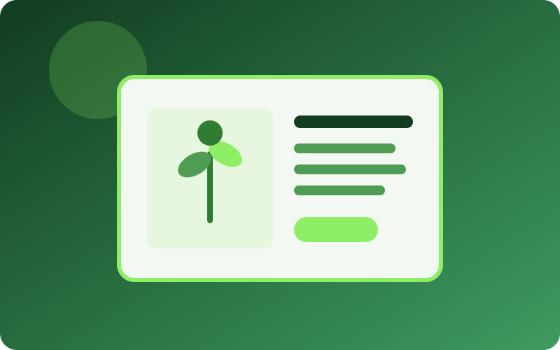
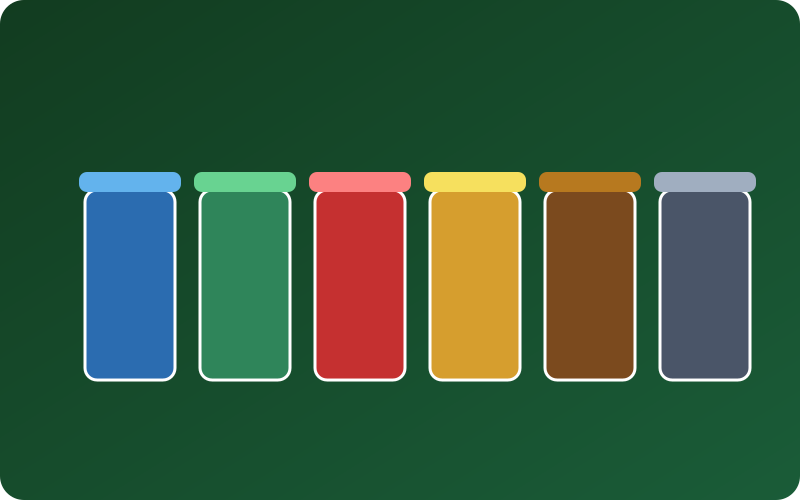

Guias Didáticos
Guias Didáticos
1. Conteúdo educativo
Artigos e resumos objetivos sobre biodiversidade, mudanças climáticas, pegada ecológica e preservação de áreas verdes urbanas.
🌱 O QUE OFERECEMOS
Conteúdo educativo, guias práticos e ferramentas gratuitas para quem quer aplicar a sustentabilidade em casa, na escola ou no bairro.
Muitas pessoas desejam ajudar o meio ambiente, mas encontram barreiras como falta de informação clara sobre o que é reciclável, como montar uma composteira doméstica ou como economizar recursos sem custos elevados.
O Raízes Sustentáveis atua como uma ponte educativa gratuita, organizando orientações baseadas em órgãos oficiais (como o Ministério do Meio Ambiente, CONAMA e ONU) em guias visuais e auditivos fáceis de consultar.

Guias Didáticos
Artigos e resumos objetivos sobre biodiversidade, mudanças climáticas, pegada ecológica e preservação de áreas verdes urbanas.

Gestão de ResíduosOrientação detalhada sobre o padrão CONAMA de cores, higienização de embalagens e descarte correto de vidro, plástico, papel e metal.
 Economia Doméstica
Economia Doméstica
Roteiros práticos para reduzir o desperdício de água potável e energia elétrica no lar, gerando alívio ambiental e economia financeira.
 Ação no Bairro
Ação no Bairro
Roteiros passo a passo para iniciar hortas comunitárias, mutirões de limpeza e campanhas de coleta seletiva em condomínios e escolas.
 Consumo Responsável
Consumo Responsável
Critérios práticos para avaliar embalagens, priorizar produtores locais, evitar o desperdício de alimentos e prolongar a vida útil de produtos.
 Rede Colaborativa
Rede Colaborativa
Espaço aberto para estudantes, professores e moradores divulgarem ideias, tirarem dúvidas e se conectarem a ações socioambientais.